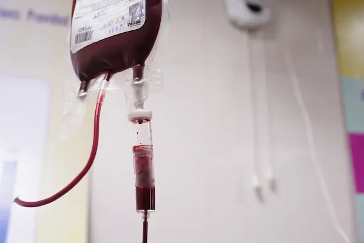

Nossa Missão e Impacto
A Hemora é uma Organização da Sociedade Civil (OSC) dedicada a salvar vidas, atuando na conscientização sobre a doação de sangue. Conheça nossa história e os valores que nos movem: Solidariedade, Ética e Comprometimento.
A Hemora é uma Organização da Sociedade Civil (OSC) dedicada a salvar vidas, atuando na conscientização sobre a doação de sangue. Conheça nossa história e os valores que nos movem: Solidariedade, Ética e Comprometimento.
Somos uma força social movida por voluntários e doadores. Saiba como se juntar à causa, descubra as oportunidades de voluntariado e veja os passos simples para realizar sua doação de vida.
Valorizamos a transparência e a comunicação direta. Acesse nossos
relatórios públicos e entre em contato para dúvidas ou parcerias.
Email: contato@hemora.org
Telefone: (00) 0000-0000
A doação de sangue é um ato de solidariedade insubstituível. Diferente de outros tratamentos, o sangue humano não pode ser fabricado artificialmente. Ele é essencial para atender pacientes em cirurgias de grande porte, tratamentos oncológicos (câncer), vítimas de acidentes graves e pessoas com doenças crônicas.
Uma única doação pode salvar até quatro vidas. O processo é rápido, totalmente seguro e todo o material é descartável. A Hemora atua na conscientização para que os estoques dos hemocentros estejam sempre preparados para quem precisa.